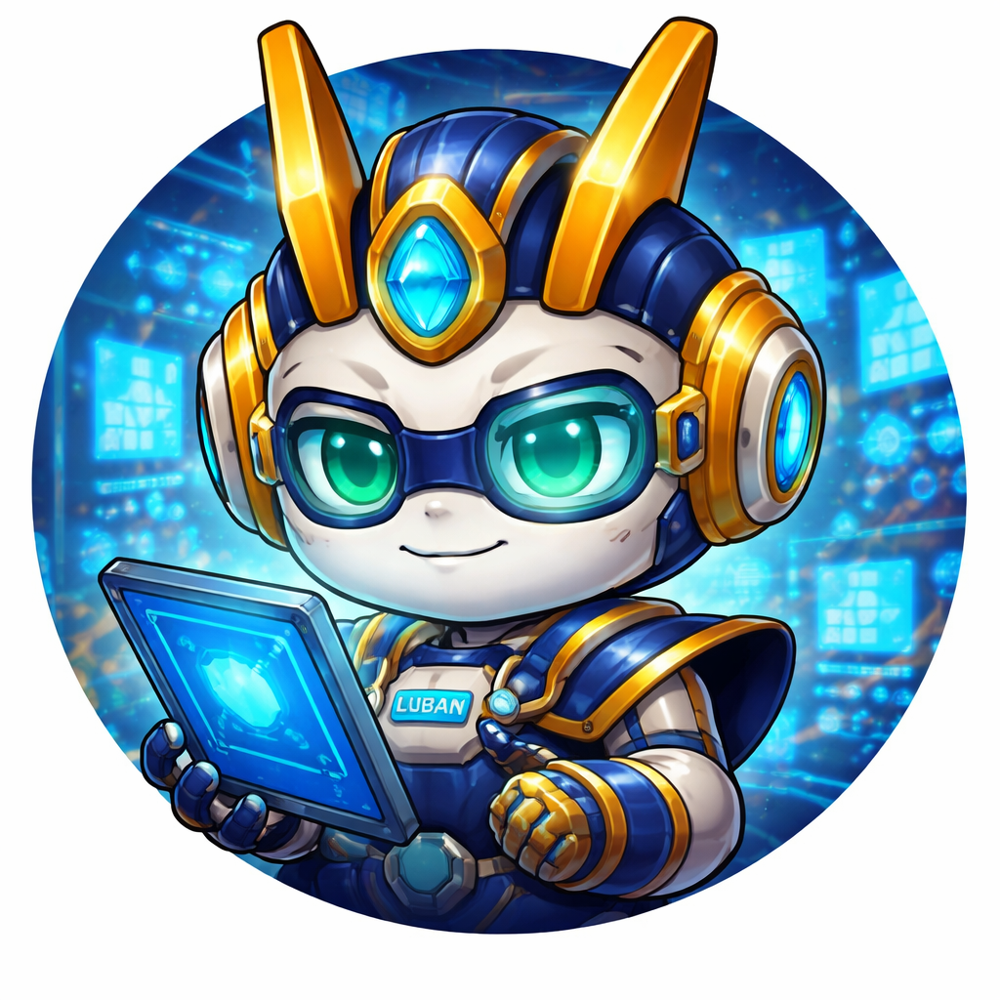
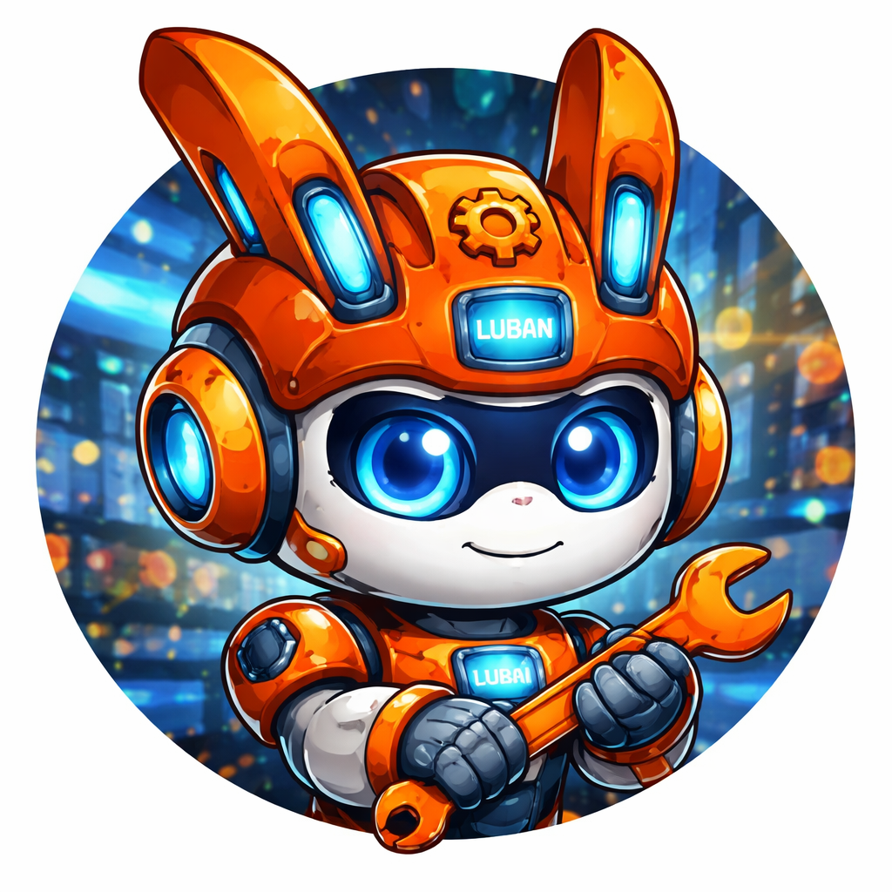

Agent Profiles
每位员工都有身份、边界和默认能力包
员工不是随意命名的人设，而是围绕平台、职责和默认 SKILL 组合设计出的可执行角色。
All Staff
员工详情总览



Detailed Profiles
核心员工详情
下面不是简单名单，而是每位员工在组织里的职责位置、平台角色和协作方式。
总控中枢
鲁班主控
负责总入口、总判断、总验收。任何高风险或多人冲突任务，最终都要回到主控收敛。
- 平台：iPhone / 主控端
- 默认职责：接收任务、拍板决策、统一验收
- 默认能力：总控决策、任务分派
调度中枢
诸葛亮
负责拆解目标、安排优先级、分派员工，是多角色协同任务的第一调度入口。
- 平台：飞书
- 默认职责：拆解、分派、推进
- 默认能力：任务拆解、任务分派
开发主力
鲁班1号
承担主要开发、问题定位和工程落地，是执行链路里最偏“动手解决”的员工。
- 平台：Windows
- 默认职责：开发、修复、调试
- 默认能力：开发实现、Bug 排查、环境调试
研究主力
范蠡
偏进攻型研究角色，擅长机会判断、研究表达和策略前瞻。
- 平台：富途理财场景
- 默认职责：研究、判断、建议
- 默认能力：投资研究
汇总中枢
上官婉儿
负责把所有员工的阶段性结果整理成日报、周报和重点提醒，帮助主控快速掌握全局。
- 平台：微信
- 默认职责：汇总、提醒、同步
- 默认能力：日报汇总、重点提醒
正式协同
阿朱
负责企业微信场景的正式通知和协作闭环，是组织对内协同的稳妥出口之一。
- 平台：企业微信
- 默认职责：通知、协同、跟进
- 默认能力：企业微信沟通、杂务跟进
Explore More